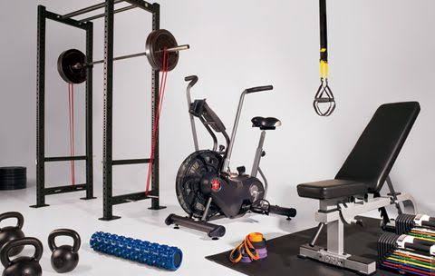
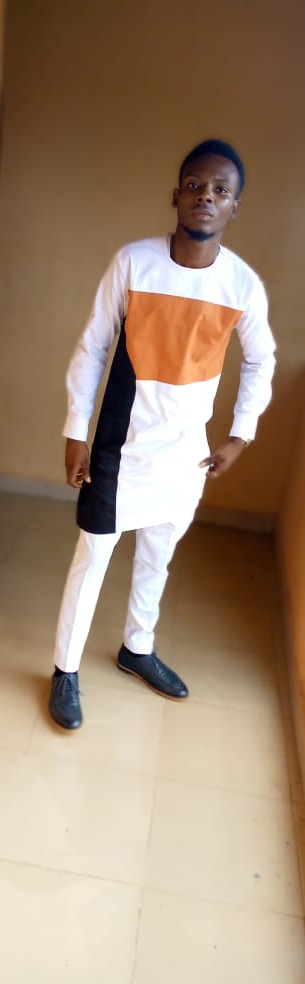
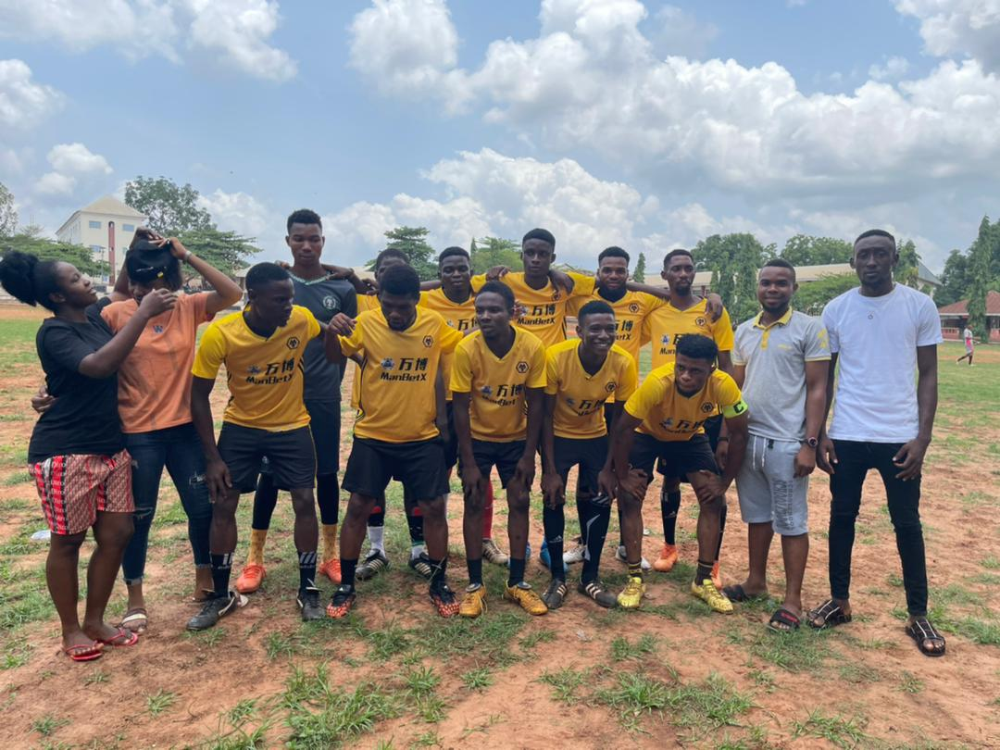
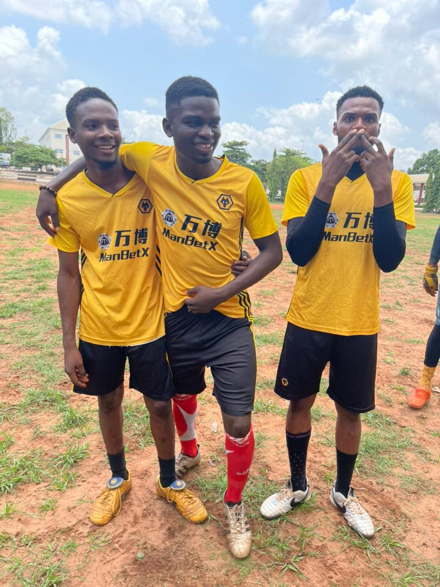
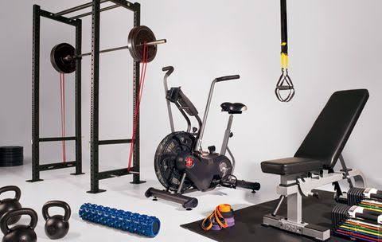
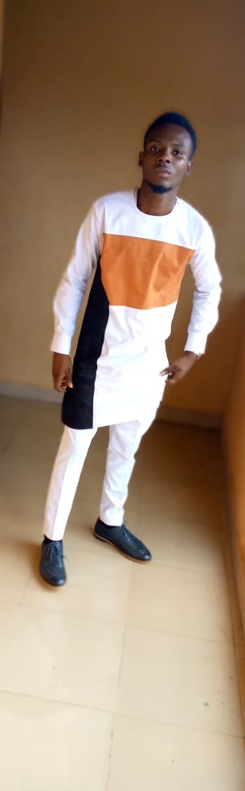
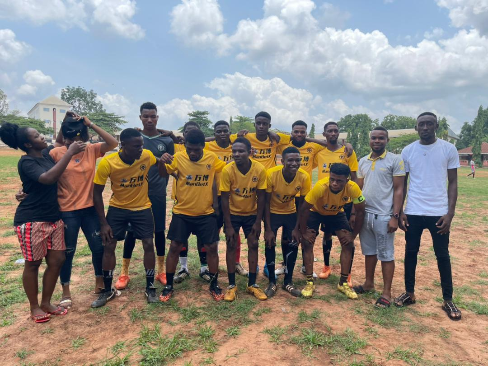
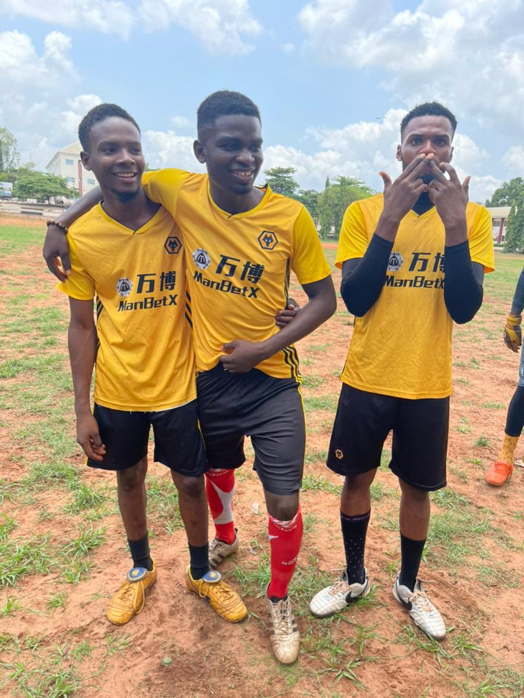

Pio's Core Attributes
Cyril is a professional, trained and nurtured to make great impacts anytime, anywhere...


Cyril is a Software Development Engineer (SDE), who made amazing
transfer of his Geoscience skills to IT.
A servent leader; ensuring optimal use and development of his ability
towards creative solutions.
Results — oriented and extroverted individual, always motivated to
contributing effectively to set objectives of an organization.
A
servant leader; ensuring optimal use and development of his ability
towards creative solutions; to achieving organization's set goals
through hard work, good team spirit, efficiency and dedication; to
serve while building a career that grows through overcoming challenges
with opportunities therein; and to enriching his knowledge and
skills.
Cyril is a passionate serial volunteer who loves
meeting new people and creating helpful networks; an admirer of
Natural and Engineering Structures; loves keeping fit; and Music lover
(keen player of Saxophone and Piano).
Cyril has great passion for Tech in all ramifications, but
specialises on Front - End Development with very strong foundation
of these skill sets and technologies: Microsoft Visio
Professional, Microsoft Access, Oracle SQL Developer, SQL Plus,
HTML5.2, CSS3, JavaScript, Bootstrap 4.0, React Native, Vue.js,
Git, GitHub, SASS, TypeScript...
You can check out my portfolios on GitHub to see works I have been
done and currently doing. It will be a delight for me... Please,
kindly contact me at “cyrilchidolue2016@gmail.com” to find out how
I might learn, support and add value to your organization's next
project(s).
Browse more to know more...
— Effective team support and assistance.
— Helped build students' memberships of professional organizations
from 10% to 85%.
— Contributed in successes of professional programs through
volunteering.
— Designed and implemented databases of SMEs (Small and Medium
Enterprises) for their sustainable development and growth.
— Designed basic Building Floor Layout using Microsoft Visio
Professional.
— Still making “Uplift” of “Mind and Soul” of people through
beautiful tones of Saxophone; especially on their birthdays.
— Writing and Publications.
Browse more to know more...
— Integrated Well Logs - Seismic Interpretation.
— Sequence Stratigraphy (including Quantitative Sequence
Stratigraphy ie: TSF Analysis).
— Geo-body Interpretation.
— Reservoir Connectivity Analysis - RCA (Fault Plane Profiles).
— Geologic (and Reservoir) Modelling (Fit - for - Purpose: 3D
Visualization of Reservoirs, Volumetric Assessment and Drill-Well
Planning).
— Production Data Integration.
— Data Gathering for Wells' P and A.
— Mapping Technique for Deep Water Environment.
Browse more to know more...
Cyril is a professional, trained and nurtured to make great impacts anytime, anywhere...
Listen to the words of those Cyril has worked with; who always show great delight and satisfaction in his works and soft skills.

Cyril is highly passionate individual, who takes every detail seriously. With his creativity, he has done works that really gave him great recommendations. Cyril will be a great asset to any organisation.

Chukwudi is a fast learner, who alwalys takes great pleasure in his works. I personally see him as very highly productive individual. His works always speaks for him. Cyril will always exceed expectations.
It will be a great delight to hear from you.
CONTACT HIS MANAGERMade with Cyril.


Pio Chimezie did it again!!! He has always done it...
This time was with your beloved team PA, Oko.
Pio Chimezie did it again!!! He has always done it...
This time was with your beloved team PA, Oko.
Pio Chimezie did it again!!! He has always done it...
This time was with your beloved team PA, Oko.

 






